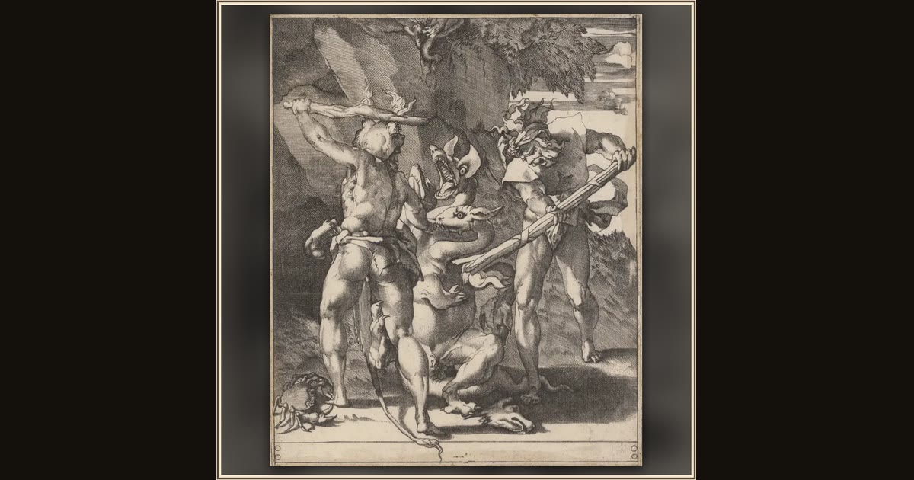

Hercules in gevecht met de hydra van Lerna
Giovanni Jacopo Caraglio, after design by Rosso Fiorentino · 1515 - 1565 · rijksmuseum
Hercules swings a club at the many-headed Hydra while another figure holds a torch; Alcmene cites this labour in her reproach to Eurystheus (950) Explore its place in Euripides's Plays, Heracleidae, line 959.